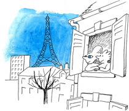

On alla jusqu'à lui payer le train fantôme. Les squelettes en carton et les hiboux phosphorescents ne l'inquiétèrent guère. Mais soudain, tout près, il vit deux grands yeux très bleus, si bleus qu'il eut envie d'y plonger, de s'y noyer. C'était les yeux de la petite fille assise avec lui dans le wagonnet de la peur. Il lui expliqua son problème : manger du bleu, est-ce possible ?